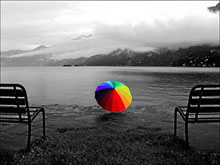
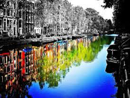
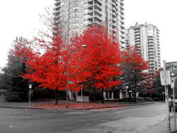

Toggle Menu
Thomas Munghono
Home
nominate a 1st Responder
share a story
Contact
1SMILE, Square Mile Infrastructure Leveraged for Emergencies.
repurpose 1000 1st responders
retask 100 Boda Boda parking stages,
and
retool 10 Boda Boda motorcycles
raising 1 highway. Northern Bypass (EU - funded)
to achieve 0 deaths
×
Boda Boda Ecosystem: Menace and/or Blessing
1st Responders
stand up and be counted
Taata Ken, 29

Kande, 28
Katalemwa, 16
Alika, 19
Obo, 24
Assiko, 31
Kobolwa, 29
Ssekandi, 20
Mawejje, 18

Massa, 21

Kasajja, 27
Kalinda, 22